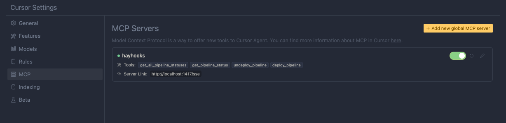
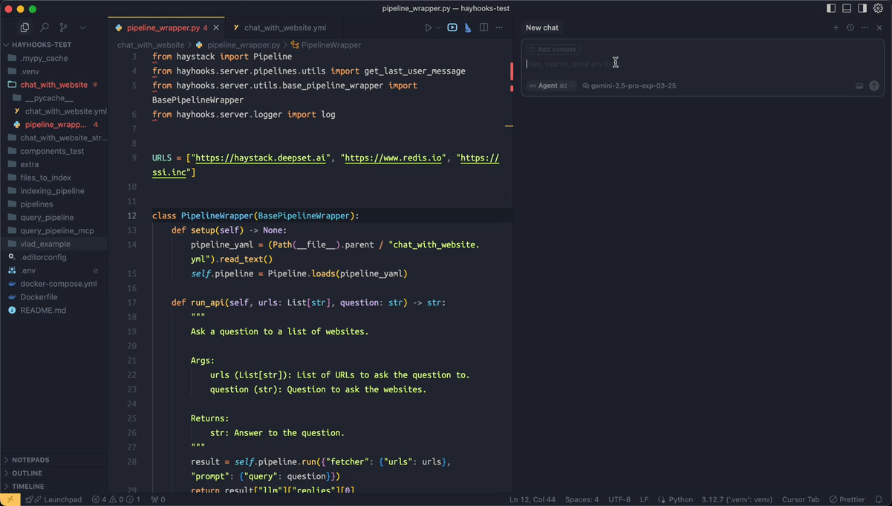

MCP Support¶
Hayhooks supports the Model Context Protocol and can act as an MCP Server, exposing pipelines and agents as MCP tools for use in AI development environments.
Overview¶
The Hayhooks MCP Server:
- Exposes Core Tools for controlling Hayhooks directly from IDEs
- Exposes deployed Haystack pipelines as usable MCP Tools
- Supports both Server-Sent Events (SSE) and Streamable HTTP transports
- Integrates with AI development environments like Cursor and Claude Desktop
Requirements¶
- Python 3.10+ for MCP support
- Install with
pip install hayhooks[mcp]
Getting Started¶
Install with MCP Support¶
pip install hayhooks[mcp]
Start MCP Server¶
hayhooks mcp run
This starts the MCP server on HAYHOOKS_MCP_HOST:HAYHOOKS_MCP_PORT (default: 127.0.0.1:1417).
Configuration¶
Environment variables for MCP server:
HAYHOOKS_MCP_HOST=127.0.0.1 # MCP server host
HAYHOOKS_MCP_PORT=1417 # MCP server port
Transports¶
Streamable HTTP (Recommended)¶
The preferred transport for modern MCP clients:
import mcp
client = mcp.Client("http://localhost:1417/mcp")
Server-Sent Events (SSE)¶
Legacy transport maintained for backward compatibility:
import mcp
client = mcp.Client("http://localhost:1417/sse")
Core MCP Tools¶
Hayhooks provides core tools for managing pipelines:
get_all_pipeline_statuses¶
Get status of all deployed pipelines:
result = await client.call_tool("get_all_pipeline_statuses")
get_pipeline_status¶
Get status of a specific pipeline:
result = await client.call_tool("get_pipeline_status", {"pipeline_name": "my_pipeline"})
deploy_pipeline¶
Deploy a pipeline from files:
result = await client.call_tool("deploy_pipeline", {
"name": "my_pipeline",
"files": [
{"name": "pipeline_wrapper.py", "content": "..."},
{"name": "pipeline.yml", "content": "..."}
],
"save_files": True,
"overwrite": False
})
undeploy_pipeline¶
Undeploy a pipeline:
result = await client.call_tool("undeploy_pipeline", {"pipeline_name": "my_pipeline"})
Pipeline Tools¶
PipelineWrapper as MCP Tool¶
When you deploy a pipeline with PipelineWrapper, it's automatically exposed as an MCP tool:
class PipelineWrapper(BasePipelineWrapper):
def run_api(self, urls: List[str], question: str) -> str:
"""Ask questions about website content"""
result = self.pipeline.run({"fetcher": {"urls": urls}, "prompt": {"query": question}})
return result["llm"]["replies"][0]
The tool will have:
- Name: pipeline_name
- Description: From method docstring
- Input Schema: Generated from method arguments
YAML Pipeline as MCP Tool¶
YAML-deployed pipelines are also exposed as MCP tools:
# pipeline.yml
components:
fetcher:
type: haystack.components.fetchers.LinkContentFetcher
prompt_builder:
type: haystack.components.builders.PromptBuilder
init_parameters:
template: "Answer: {{query}}"
llm:
type: haystack.components.generators.OpenAIGenerator
connections:
- sender: fetcher.content
receiver: prompt_builder.documents
- sender: prompt_builder
receiver: llm
inputs:
urls: fetcher.urls
query: prompt_builder.query
outputs:
replies: llm.replies
Deploy with MCP tool support:
hayhooks pipeline deploy-yaml -n web_qa --description "Answer questions about websites" pipeline.yml
Skip MCP Tool Listing¶
To prevent a pipeline from being listed as an MCP tool:
class PipelineWrapper(BasePipelineWrapper):
skip_mcp = True # This pipeline won't be listed as an MCP tool
def setup(self) -> None:
...
def run_api(self, ...) -> str:
...
IDE Integration¶
Cursor Integration¶
- Open Cursor Settings
- Go to MCP Section
- Add Hayhooks Server:
{
"mcpServers": {
"hayhooks": {
"url": "http://localhost:1417/mcp"
}
}
}
After adding the MCP Server, you should see the Hayhooks Core MCP Tools in the list of available tools:

- Use Core Tools:
- Deploy pipelines directly from Cursor chat
- Manage pipeline lifecycle
- Run pipelines with custom parameters
Development and deployment of Haystack pipelines directly from Cursor¶
Here's a video example of how to develop and deploy a Haystack pipeline directly from Cursor:

Claude Desktop Integration¶
For Claude Desktop users:
Using supergateway (Free Tier)¶
{
"mcpServers": {
"hayhooks": {
"command": "npx",
"args": [
"-y",
"supergateway",
"--streamableHttp",
"http://localhost:1417/mcp"
]
}
}
}
Direct Connection (Pro/Max/Teams/Enterprise)¶
{
"mcpServers": {
"hayhooks": {
"url": "http://localhost:1417/mcp"
}
}
}
Development Workflow¶
1. Start Hayhooks Server¶
# Start main Hayhooks server
hayhooks run --port 1416
# Start MCP server in another terminal
hayhooks mcp run --port 1417
2. Deploy a Pipeline¶
hayhooks pipeline deploy-files -n web_qa ./examples/pipeline_wrappers/chat_with_website
3. Use in IDE¶
Configure your IDE to connect to the MCP server, then use natural language to:
- Deploy new pipelines
- Modify existing pipelines
- Run pipelines with custom inputs
- Check pipeline status
Tool Development¶
Custom Tool Descriptions¶
Use docstrings to provide better tool descriptions:
def run_api(self, urls: List[str], question: str) -> str:
"""
Ask questions about website content using AI.
This tool analyzes website content and provides answers to user questions.
It's perfect for research, content analysis, and information extraction.
Args:
urls: List of website URLs to analyze
question: Question to ask about the content
Returns:
Answer to the question based on the website content
"""
result = self.pipeline.run({"fetcher": {"urls": urls}, "prompt": {"query": question}})
return result["llm"]["replies"][0]
Input Validation¶
Hayhooks automatically validates inputs based on your method signature:
def run_api(
self,
urls: List[str], # Required: List of URLs
question: str, # Required: User question
temperature: float = 0.7, # Optional: Temperature (0.0-1.0)
max_tokens: int = 1000 # Optional: Max tokens
) -> str:
...
Security Considerations¶
Authentication¶
Currently, Hayhooks MCP server doesn't include built-in authentication. Consider:
- Running behind a reverse proxy with authentication
- Using network-level security (firewalls, VPNs)
- Implementing custom middleware for authentication
Input Validation¶
- Use proper type hints in method signatures
- Implement custom validation in your pipeline wrappers
- Sanitize inputs before processing
Resource Management¶
- Monitor tool execution for resource usage
- Implement timeouts for long-running operations
- Consider rate limiting for production deployments
Troubleshooting¶
Common Issues¶
- Connection Refused
- Ensure MCP server is running
- Check port configuration
-
Verify network connectivity
-
Tool Not Found
- Verify pipeline deployment
- Check
skip_mcpsetting -
Ensure proper method implementation
-
Input Validation Errors
- Check method signatures
- Verify data types
- Review required parameters
Debug Commands¶
# Check MCP server status
curl http://localhost:1417/mcp/health
# List available tools
curl http://localhost:1417/mcp/tools
# Test tool execution
curl -X POST http://localhost:1417/mcp/call \
-H 'Content-Type: application/json' \
-d '{"tool": "get_all_pipeline_statuses"}'
Examples¶
Research Assistant¶
class ResearchAssistantWrapper(BasePipelineWrapper):
def setup(self) -> None:
from haystack.components import PromptBuilder, OpenAIChatGenerator
from haystack.components.fetchers import LinkContentFetcher
from haystack.components.converters import HTMLToDocument
fetcher = LinkContentFetcher()
converter = HTMLToDocument()
prompt_builder = PromptBuilder(
template="Research this content and answer: {{query}}\n\nContent: {{documents}}"
)
llm = OpenAIChatGenerator(model="gpt-4o")
self.pipeline = Pipeline()
self.pipeline.add_component("fetcher", fetcher)
self.pipeline.add_component("converter", converter)
self.pipeline.add_component("prompt_builder", prompt_builder)
self.pipeline.add_component("llm", llm)
self.pipeline.connect("fetcher.content", "converter")
self.pipeline.connect("converter.documents", "prompt_builder.documents")
self.pipeline.connect("prompt_builder", "llm")
def run_api(self, urls: List[str], query: str) -> str:
"""
Research websites and provide detailed answers.
Perfect for academic research, competitive analysis, and content research.
Args:
urls: List of websites to research
query: Research question or topic
Returns:
Detailed research response with citations
"""
result = self.pipeline.run({
"fetcher": {"urls": urls},
"prompt_builder": {"query": query}
})
return result["llm"]["replies"][0].content
Next Steps¶
- OpenAI Compatibility - OpenAI integration
- OpenWebUI Integration - Chat interface integration
- Examples - See working examples